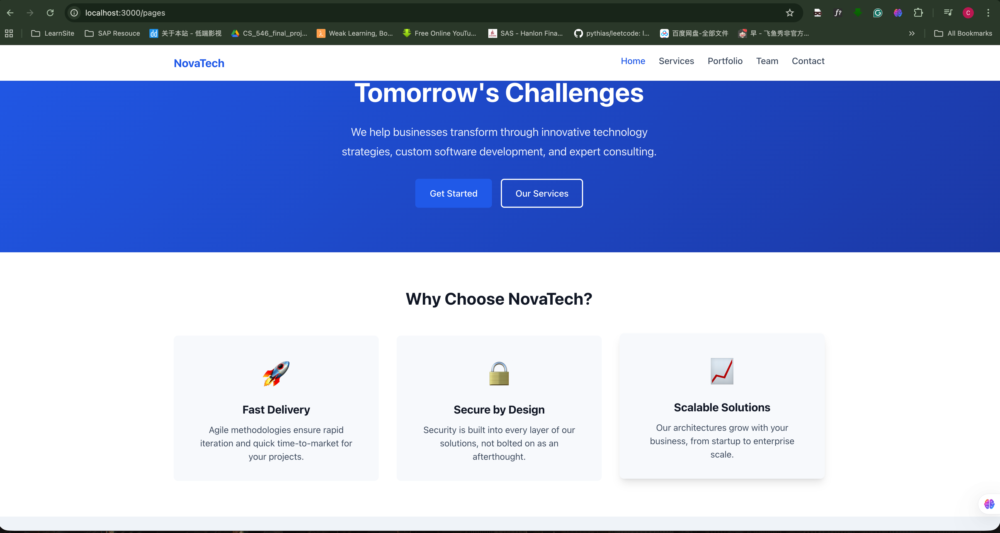
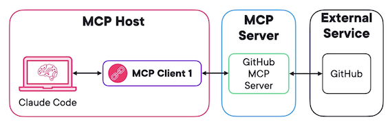
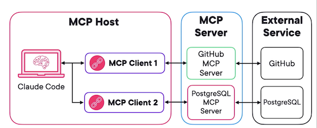
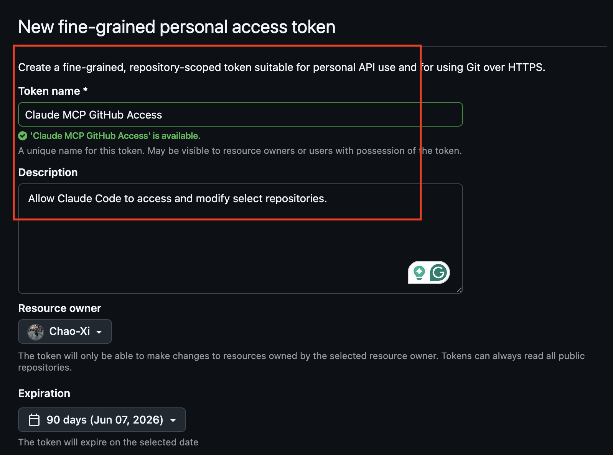
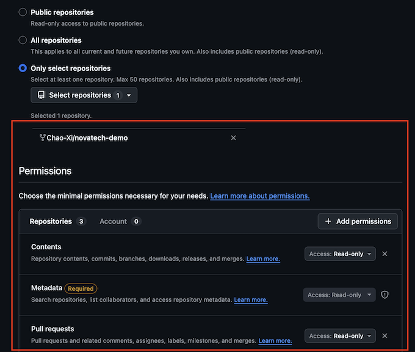
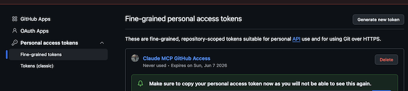
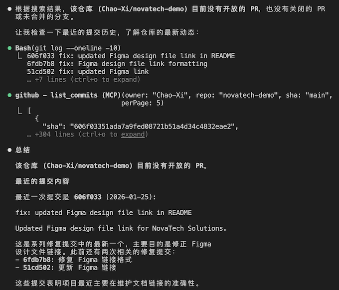

1 Claude Code连接外部工具：MCP协议实战指南
https://github.com/nyisztor/novatech-demo
实战项目搭建：NovaTech 演示项目完整配置
在开始学习 MCP 与高级 Claude Code 技巧前，我们先统一配置全程通用的演示项目，后续所有章节都基于该项目展开，请务必完成。
一、项目介绍
本课程使用虚构技术咨询公司 NovaTech Solutions 作为演示项目：
- 极简官网：首页、服务、案例、团队、联系我们 共 5 个页面
- 技术栈：HTML + CSS + JavaScript
- 项目本身不复杂，主要作为Claude Code 高级功能练习环境
- 最终目标：完成外部工具集成、专属智能代理、自动化工作流
二、一键拉取项目
打开终端，克隆项目：
git clone https://github.com/nyisztor/novatech-demo.git
cd novatech-demo
三、安装依赖并启动
npm install
npm run dev
启动后在浏览器访问：
http://localhost:3000/pages/index.html

四、项目结构说明
src/：网站源码（HTML、CSS、JS）.claude/：Claude Code 核心配置目录（需开启显示隐藏文件）- Mac：
Cmd + Shift + . scripts/：Shell 脚本，用于后续并行开发CLAUDE.md：项目说明文档，帮助 Claude 快速理解代码库
五、验证环境是否正常
- 在项目目录启动 Claude Code
- 简单提问，例如：
这个网站有哪些页面？
- 如果 Claude 能正确识别
src/pages下的 HTML 文件，说明配置成功。
❯ 这个网站有哪些页面？
⏺ Searched for 1 pattern (ctrl+o to expand)
⏺ 这个网站有 5 个页面：
┌──────┬──────────────────────────┬──────────────┐
│ 页面 │ 路径 │ 说明 │
├──────┼──────────────────────────┼──────────────┤
│ 首页 │ src/pages/index.html │ 网站主页 │
├──────┼──────────────────────────┼──────────────┤
│ 服务 │ src/pages/services.html │ 服务介绍 │
├──────┼──────────────────────────┼──────────────┤
│ 案例 │ src/pages/portfolio.html │ 项目案例展示 │
├──────┼──────────────────────────┼──────────────┤
│ 团队 │ src/pages/team.html │ 团队成员 │
├──────┼──────────────────────────┼──────────────┤
│ 联系 │ src/pages/contact.html │ 联系表单 │
└──────┴──────────────────────────┴──────────────┘
这些都是 HTML5 语义化页面，使用 CSS3 和 Vanilla JavaScript 构建，符合项目的技术栈规范。
MCP：解锁Claude外部连接能力的核心协议
我们从Claude生态中最核心的能力之一讲起——模型上下文协议（MCP，Model Context Protocol）。
在实际开发中，一个功能往往需要同时参考Figma设计稿与GitHub工单。传统流程里，你必须手动下载文档、复制文本，再粘贴给Claude Code。不仅繁琐、打断工作流，而且信息是静态的：一旦设计更新，你手里的上下文立刻过时。
MCP就是为解决这个问题而生。它是Anthropic推出的开放标准协议，能让Claude这类AI助手以标准化方式，直接对接外部数据源与工具。
Model Context Protocol (MCP)

MCP 架构：客户端–服务端模式
MCP采用经典的C/S架构：
- Claude Code 作为MCP主机，负责统一调度外部工具。
- 每接入一个服务，就会创建一个独立MCP客户端，与对应的MCP服务端建立一对一专属连接。例如连接GitHub就新建GitHub客户端，连接PostgreSQL就新建数据库客户端，连接相互隔离。

客户端无需关心GitHub、数据库等复杂的原生API细节，只通过统一规范与服务端通信；由MCP服务端完成适配与翻译。这种解耦设计，让你可以自由增删、替换工具，无需重新训练模型，也不用修改Claude Code内部逻辑。
有了MCP，Claude不再局限于本地文件，还能直接查看PR、从Figma拉取最新设计需求，全程不用离开终端。
但使用中也要注意约束：Token 限制。随意拉取大量外部数据，会撑满上下文窗口，拖慢响应、增加成本。
实战配置：通过 MCP 让 Claude Code 无缝集成 GitHub
本篇带你手把手配置 Claude Code × GitHub 集成，无需离开终端，即可直接查看 PR、检索提交记录、读取仓库上下文。
一、先创建 GitHub 细粒度 Token
在使用 MCP 连接前，必须先创建个人访问令牌，用于权限控制：
- 进入 GitHub → Settings → Developer settings → Personal access tokens
- 选择 Fine-grained tokens（细粒度令牌，权限更安全）
- 命名（如
Claude MCP GitHub Access），选择可访问的仓库 - 分配最小只读权限：
- Contents：Read-only
- Pull requests：Read-only
- 生成令牌并立即复制（仅显示一次）



二、安全存储令牌：环境变量
不要硬编码密钥，建议配置为环境变量：
-
macOS（zsh）
bash export GITHUB_TOKEN="你的token" source ~/.zshrc -
Linux（bash）
bash
export GITHUB_TOKEN="你的token"
source ~/.bashrc
- Windows
cmd setx GITHUB_TOKEN "你的token"
重启终端后生效，Claude Code 会自动读取。
三、一行命令添加 GitHub MCP 服务
使用 Claude CLI 注册 GitHub MCP 服务端：
claude mcp add --scope project github --env GITHUB_PERSONAL_ACCESS_TOKEN=${GITHUB_TOKEN} -- npx -y @modelcontextprotocol/server-github
% claude mcp add --scope project github --env GITHUB_PERSONAL_ACCESS_TOKEN=${GITHUB_TOKEN} -- npx -y @modelcontextprotocol/server-github
Added stdio MCP server github with command: npx -y @modelcontextprotocol/server-github to project config
File modified: /Users/jacob/learnspace/ai/claude-adv/.mcp.json
.mcp.json
{
"mcpServers": {
"github": {
"type": "stdio",
"command": "npx",
"args": [
"-y",
"@modelcontextprotocol/server-github"
],
"env": {
"GITHUB_PERSONAL_ACCESS_TOKEN": "..."
}
}
}
}
作用说明
--scope project：作用于整个项目，可共享给团队--env：传入环境变量，不暴露密钥- 项目根目录会生成
.mcp.json，可提交到 Git，团队共用配置
不推荐：直接在命令里写 Token，极易泄露密钥。
四、MCP 三种作用域（scope）
local（默认）：仅当前项目、仅自己可见
Stores your project-specific user settings privately, accessible only within the current project directory
project：项目级，可共享给全团队
Creates or updates a .mcp.jsonfile in your directory, essential for team workflows
user：用户级，本机所有项目都可用
Stores configuration globally across all projects, ideal for tools like GitHub
Claude Code MCP configurations
五、Windows 常见问题
启动时报连接关闭错误，通常是 npx 解析问题：
claude mcp add ... -- cmd /c npx -y @anthropic-ai/github-mcp
六、手动配置与管理命令
- 直接编辑对应 scope 的 JSON 配置文件即可添加 MCP 服务
- 修改配置后必须重启 Claude Code
常用管理命令：
- claude mcp list：查看所有 MCP 服务
- claude mcp remove：删除服务
- claude mcp get：查看服务详情
% claude mcp list
Checking MCP server health...
github: npx -y @modelcontextprotocol/server-github - ✓ Connected
% claude mcp get github
github:
Scope: Project config (shared via .mcp.json)
Status: ✓ Connected
Type: stdio
Command: npx
Args: -y @modelcontextprotocol/server-github
七、验证集成是否成功
- 启动 Claude Code
- 执行
/mcp，看到 GitHub 显示 connected 即成功
ollama launch claude --model qwen3-coder-next:cloud
- 直接用自然语言查询：
列出本仓库所有开放 PR，并总结最近一个的内容
Claude 会自动通过 MCP 拉取 GitHub 数据并给出结果，无需手动调用 API。
❯ 列出本仓库所有开放 PR，并总结最近一个的内容
⎿ ⧉ Selected 15 lines from ../.mcp.json in Visual Studio Code
⏺ github - list_pull_requests (MCP)(owner: "novatech-demo", repo: "novatech-demo",
state: "open")
⎿ Error: MCP error -32603: Not Found: Resource not found: Not Found
⏺ github - search_repositories (MCP)(query: "novatech-demo")
⎿ {
"total_count": 14,
"incomplete_results": false,
… +196 lines (ctrl+o to expand)
